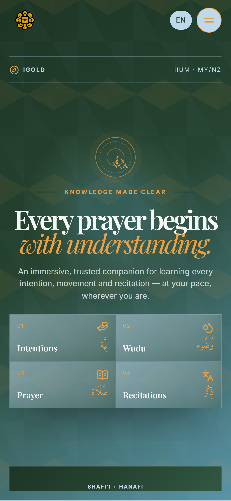
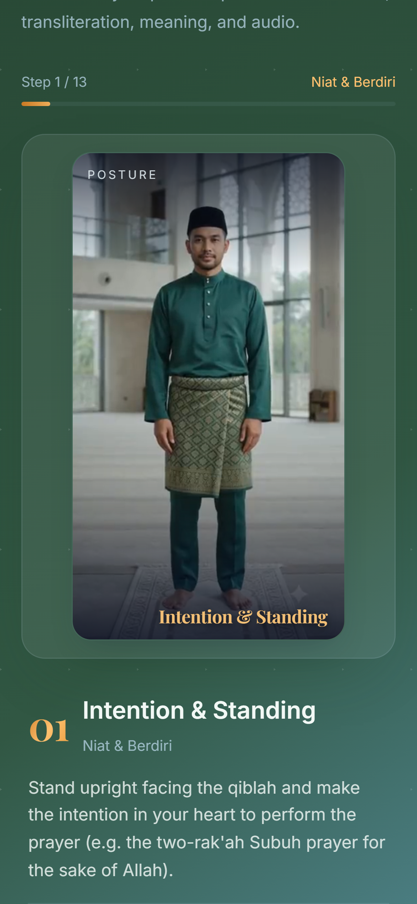
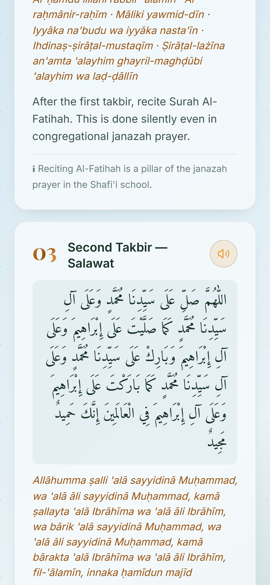

Complete guidance for the Shafi’i and Hanafi madhhabs — switch at any time.
A short video for each posture, from the opening takbir to the closing salam.
Audio recitation for every supplication, with transliteration and meaning.
Ablution, prayer intentions and the funeral prayer, each taught in full.
A ten-question quiz closes the loop, so the knowledge stays.
Point your camera to begin
IGOLD — International Global Outreach & Leadership Programme
International Islamic University Malaysia
Web igoldiium.my
Developed by Rusyaidi · rewsyaydee.tech
Religious content follows the Shafi’i and Hanafi schools. Please refer to a qualified ustaz for personal rulings.
IGOLD
Interactive Islamic Prayer Learning
An immersive companion for learning every intention, movement and recitation — on the phone you already carry.

igoldiium.my
Scan to start

Every step,
demonstrated.
Thirteen guided postures with video, Arabic, transliteration, meaning and audio — on the phone you already carry.
A free, interactive guide to solat — for anyone learning to pray, or returning to prayer, and for those who guide them.
What makes a prayer valid, and the pillars it is built on.
The niyyah for all five daily prayers, with audio.
Ablution from intention to closing du’a, plus its rulings.
Thirteen guided steps with video, recitation and meaning.
The funeral prayer, demonstrated and recited in full.
Every supplication in one place — read, listen, repeat.
Compare every position side by side, then test what you know.
Shafi’i and Hanafi · English and Bahasa Melayu · desktop and mobile.
Open igoldiium.my on your phone or computer. Nothing to install.
Select your madhhab and who is learning — the guide adapts.
Watch each posture, listen to the recitation, then continue.
